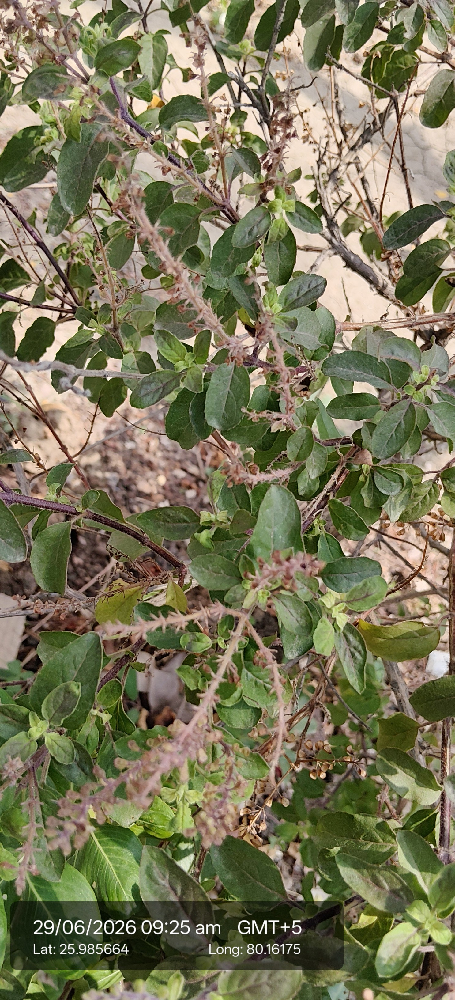
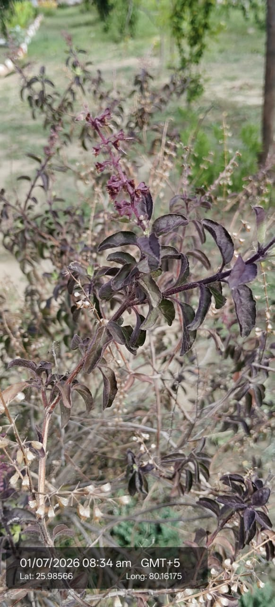

| Scientific name | Ocimum tenuiflorum L. (Syn. Ocimum sanctum L.) |
|---|---|
| Type | Herb (Aromatic Shrub) |
| Category | Herbs |
Habitat & Growing Conditions
- Commonly grown in home gardens, temple premises, fields, and tropical to subtropical regions. It grows well in warm climates with well-drained soil.
Ecological & Economic Importance
- Tulsi is an aromatic medicinal herb belonging to the family Lamiaceae.
- It is widely used in Ayurveda for treating cough, cold, fever, and respiratory disorders.
- The leaves are used to prepare herbal tea and traditional medicines.
- Tulsi has antibacterial, antiviral, antifungal, and antioxidant properties.
- It is considered a sacred plant and is worshipped in many Indian households.
- The essential oil extracted from Tulsi is used in perfumes and herbal products.
- It attracts bees and other pollinators, helping maintain biodiversity.
- The plant is easy to grow and requires minimal care.
- It helps improve air quality due to its aromatic compounds.
- Tulsi has great medicinal, religious, ecological, and economic importance.